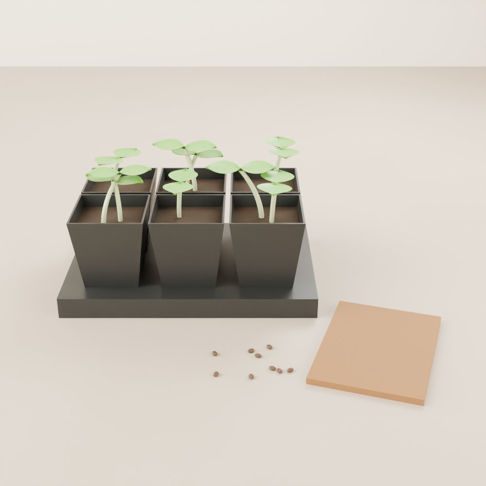

Beginner guide · Starting seeds
Start seeds indoors.
Almost everything you grow begins as a seed. Get this part right and every other guide gets easier. It works the same whether your plant is headed for a pot of soil, a jar, or a bucket.

01 The idea
What a seed needs
To sprout, a seed needs three things: moisture, warmth, and air. Most seeds don't need light until they pop up. The moment they do, they need lots of it.
There are two ways to start, depending on where the plant is going:
- Going into soil? Start it in seed-starting mix, in small cells or cups. Use this for the pots of soil guide.
- Going into water? Start it in a growing cube (rockwool or coco coir), so it can drop straight into a net cup. Use this for the jar and bubble bucket guides.
Growing microgreens? Skip this guide. They're sown straight onto the tray.
02 Shopping list
What you need
Tick things off as you gather them.
-
Fresh seeds from this year or last sprout best. Keep the packet, because it tells you how deep to plant and how long sprouting takes.
-
For soil: seed-starting mix (finer and lighter than potting mix) in a cell tray or small cups. DIY: yogurt cups or the bottoms of milk cartons, with holes poked in the bottom. For water: rockwool or coco coir growing cubes.
-
To hold everything and let you water from below. DIY: a baking dish or a takeout container.
-
A plastic dome keeps the moisture in while seeds sprout. DIY: plastic wrap, a clear takeout lid, or a bread bag.
-
For gentle watering, and so you remember what's what. Strips of masking tape and a marker work fine.
-
A grow light gives the sturdiest seedlings. A very bright window can work in spring and summer, but seedlings on a windowsill often get tall and floppy. Our light guide explains how to set one up.
-
Helps warm-loving seeds like tomatoes and peppers sprout faster in a cool house. Lettuce doesn't need one.
03 Method
Step by step
-
Read the packet
It tells you how deep to plant, how many days sprouting takes, and whether the seed needs light to sprout. Some, like lettuce, sprout better when barely covered.
-
Wet the mix or cubes
Mix: dampen it until it feels like a wrung-out sponge, then fill your cells. Cubes: soak them in water for a few minutes and let the extra drip out. They should be moist, not dripping.
-
Sow 2 or 3 seeds in each spot
Not every seed will sprout, so plant a couple per cell or cube. A good rule is to bury seeds about twice as deep as they are wide. Tiny seeds just get pressed onto the surface.
-
Cover and keep warm
Put the clear cover on and keep the tray somewhere warm. Most seeds like about 20 to 25°C (68 to 77°F); lettuce prefers it a bit cooler. Check every day and mist if the surface looks dry.
-
Light, as soon as they sprout
The day you see sprouts, take the cover off and give them strong light, about 14 to 16 hours a day. Under a grow light, keep it fairly close, following the light's instructions. A day or two in the dark is enough to make seedlings stretch.
-
Keep just one
When the seedlings are a couple of centimetres (about an inch) tall, snip the extras at soil level with scissors and keep the strongest one. Pulling them can damage the roots of the one you keep.
-
Water from below
Pour water into the tray underneath and let the mix or cubes soak it up. Keep them damp but not soggy. Once the first "true" leaves appear (see below), you can add plant food at about a quarter of the label's strength. Our plant food guide explains strengths.
-
Move them to their new home
When a seedling has 2 to 4 true leaves, and for cubes when roots poke out of the bottom, it's ready for its jar, bucket, or pot.
Sprouting times vary a lot: lettuce and radish can be up in a few days, while peppers can take two weeks or more.
04 Good to know
Seed leaves and true leaves
The first one or two leaves a seedling makes are seed leaves. They're usually smooth and simple and often look nothing like the grown-up plant. The next leaves are the true leaves, which look like a tiny version of the real thing, like a little jagged tomato leaf or a crinkly lettuce leaf. Guides often count true leaves to tell you when to move a seedling.
05 Troubleshooting
If something looks wrong
- Nothing came up
- The usual causes are too cold, too dry, planted too deep, or old seeds. Check the packet's sprouting time before giving up, because some seeds are slow.
- Tall, thin, floppy seedlings
- They're stretching for light. Move the light closer or give them more hours. Next time, put them under light the day they sprout.
- Seedlings fall over at the base and die
- This is called "damping off", a fungus that loves soggy, still conditions. Water from below, let the surface dry a little, and give them air (take the cover off once they sprout, and a small fan helps).
- White fuzz or mould on the surface
- Too much moisture and not enough air. Take the cover off more often and water less.
Show us your sprouts
Join the Root Collective to swap tips, ask questions, and show off your seedlings.
Join us, it's free